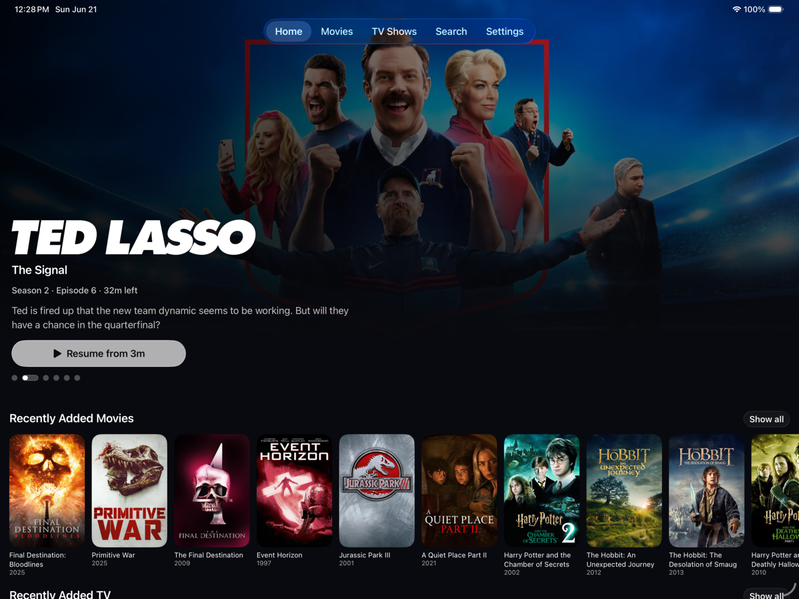
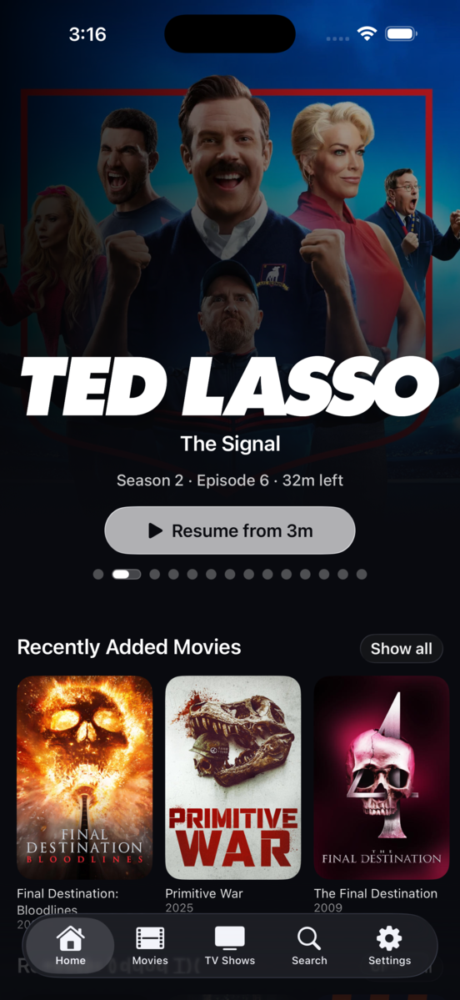

Built from the ground up for your Plex library, online or offline, on every Apple device you own.
MKV, HEVC, DTS, subtitles—whatever's in your library, it just works.
Older and lower-resolution videos can look sharper on bigger screens, with automatic tuning that stays out of the way.
Save movies, shows, seasons, and episodes with metadata and artwork ready when your server is not.
Automatically skips intros and credits. Binge without lifting a finger.
Keep watching while you browse. Multitasking, meet movie night.
Real SwiftUI on iPhone, iPad, Mac, and Apple TV.
Dusk is built with Swift and SwiftUI, licensed under MIT. Read the code, contribute, or build your own.
Yes — free and open source, no ads, no tracking, and every feature is free for everyone. If Dusk has earned it, there's an optional supporter tier in the app (one-time tips or a small subscription) that helps cover the App Store costs and unlocks alternate app icons as a thank-you.
Dusk's source is released under the MIT License, so you're free to read, modify, and redistribute it. Video playback is powered by VLCKit, which is licensed separately under the LGPL v2.1.
Yes — Dusk runs natively on Apple TV, with the same library and playback experience as iPhone and iPad.
It's on the roadmap. First we want to refine and polish the Plex experience, then we'll expand to other backends.
Yes. Dusk can save movies, shows, seasons, and episodes for offline playback, including the metadata and artwork needed to browse what you have saved.
Yes. AI Upscaling can make older or lower-resolution files look sharper, especially on larger screens. It is automatic by default, and you can turn it off in Settings.
Usually no. Dusk starts with direct play, so your server normally just serves the file as-is. Manual quality changes can use Plex transcoding, which requires a server capable of handling the selected quality.
MKV, MP4, MOV, HEVC, H.264, DTS, AAC, AC3, PGS subtitles, SRT, ASS.
No. See our Privacy Policy for details.
Yes. That said, I'm the main developer and bring ~7 years of professional software engineering experience to the project. I review every change, make the calls that matter, and fully stand behind what ships.